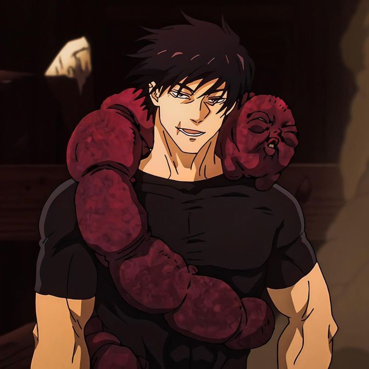
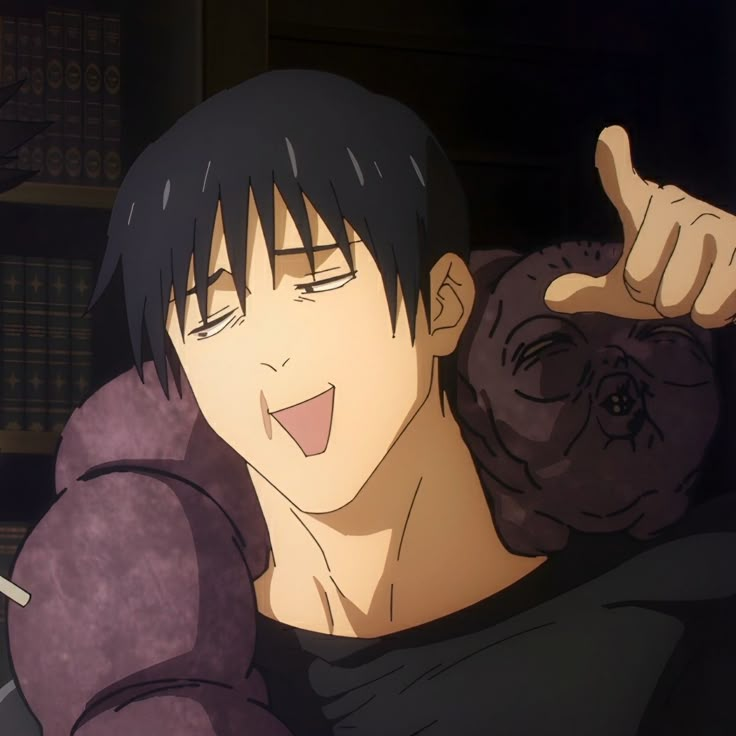
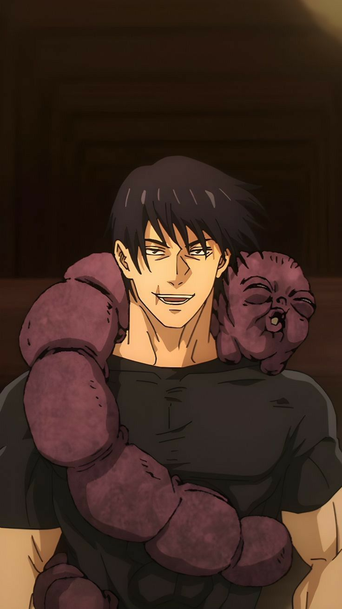

Otaku Drift présente
Deux légendes. Gravées.

Domain
Expansion
領域展開




Toji
vs
Gojo
Toji



禪院甚爾
Modèle 01 — Sorcerer killer
Toji Zen'in
Né sans énergie occulte.
Silicone premium · 202 × 12 × 2 mm · Gravure en creux


Gojo vs Toji
Le combat qui a tout changé.
赫
蒼
Technique inversée · 虚式
Hollow Purple
Satoru
五条悟
Modèle 02 — The strongest
Satoru Gojo
Seul au sommet.
La collection
Deux légendes, liées.
RésistantÉtancheDurableConfortable
Bracelets gravés · Jujutsu Kaisen
Porte ta malédiction.